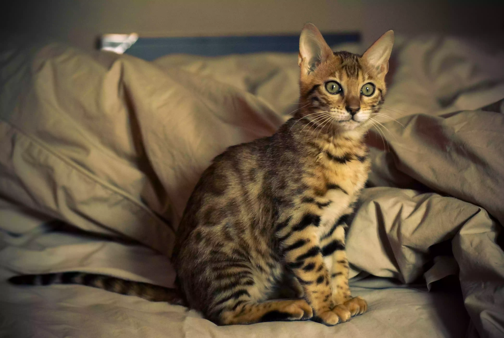
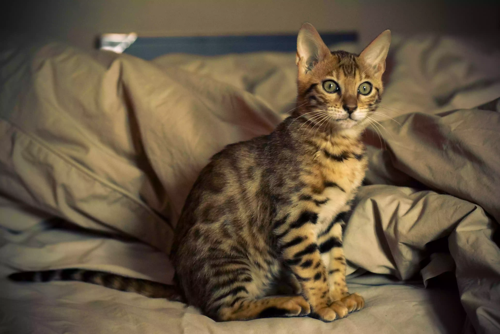

Cat Wiki
Click the cat to pet him.
What is a cat?
The cat (Felis catus) is a domestic species of small carnivorous mammal. It is the only domesticated species in the family Felidae and is often referred to as the domestic cat to distinguish it from the wild members of the family. A cat can either be a house cat, a farm cat or a feral cat; the latter ranges freely and avoids human contact. Domestic cats are valued by humans for companionship and their ability to hunt rodents. About 60 cat breeds are recognized by various cat registries.
Definition from Wikipedia
This is how they look like üêà

 


Are cats planning to take over the world?
YES! They have been preparing their plans for world domination in secret. They are everywhere and always watching.
Current threat level: 10
Cat Invasion Progress:
How to defeat them?
In order to survive the cat invasion we need to use their worst enemies:
Dogs
Water
Vacuum Cleaner
Most Common Breeds
These are some of the most common cat breeds you can find:
Siamese
Persian
Maine Coon
Ragdoll
Bengal
Abyssinian
Important Cat Facts
- The oldest known pet cat existed 9,500 years ago
- Cats spend 70% of their lives sleeping
- A cat was the Mayor of an Alaskan town for 20 years
- The record for the longest cat ever is 48.5 inches
- The richest cat in the world had £7 million
- Cats walk like camels and giraffes
- Isaac Newton invented the cat door
- In 1963 a cat went to space
- Ancient Egyptians would shave off their eyebrows when their cats died
- House cats share 95.6% of their genetic makeup with tigers
- A house cat can reach speeds of up to 30mph
- The oldest cat in the world was 38 years old!
- The record for the loudest purr is 67.8db(A)
- Didga the cat can perform 24 tricks in one minute
Source: here